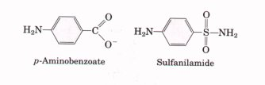

The molecular nitrogen that makes up 80% of the earth's
atmosphere is unavailable to living organisms until it is
reduced. Fixation of atmospheric N2 takes place in certain
free-living soil bacteria and in symbiotic bacteria in the root
nodules of leguminous plants, by the action of the complex
nitrogenase system. Formation of ammonia by bacterial fixation of
N2, nitrification of ammonia to form nitrate by soil organisms,
conversion of nitrate to ammonia by higher plants, synthesis of
amino acids from ammonia by plants and animals, and conversion of
nitrate to N2 by some soil bacteria in the process of
denitrification constitute the nitro
gen cycle. The fixation of N2 as NH3 is carried out by a protein
complex called the nitrogenase complex, in a reaction that
requires ATP. The nitrogenase complex is very labile in the
presence of O2.
In living systems, reduced nitrogen is incorporated first into amino acids and then into a variety of other biomolecules, including nucleotides. The key entry point is the amino acid glutamate. Glutamate and glutamine are the nitrogen donors in a wide variety of biosynthetic reactions. Glutamine synthetase, which catalyzes the formation of glutamine from glutamate, is a key regulatory enzyme of nitrogen metabolism.
The amino acid and nucleotide biosynthetic pathways make repeated use of the biological cofactors pyridoxal phosphate, tetrahydrofolate, and S-adenosylmethionine. Pyridoxal phosphate is required for transamination reactions involving glutamate and for a number of other amino acid transformations. One-carbon transfers are carried out using S-adenosylmethionine (at the -CH3 oxidation level) and tetrahydrofolate (usually at the -CHO and -CH2OH oxidation levels). Enzymes called glutamine amidotransferases are used in reactions that incorporate nitrogen derived from glutamine.
Mammals (e.g., humans and the albino rat) can synthesize 10 of the 20 amino acids of proteins. The remainder, which are required in the diet (essential amino acids), can be synthesized by plants and bacteria. Among the nonessential amino acids, glutamate is formed by reductive amination of α-ketoglutarate and is the precursor of glutamine, proline, and arginine. Alanine and aspartate (and thus asparagine) are formed from pyruvate and oxaloacetate, respectively, by transamination. The carbon chain of serine is derived from 3-phosphoglycerate. Serine is a precursor of glycine; the β-carbon atom of serine is transferred to tetrahydrofolate. Cysteine is formed from methionine and serine by a series of reactions in which S-adenosylmethionine and cystathionine are intermediates. The aromatic amino acids (phenylalanine, tyrosine, and tryptophan) are formed via a pathway in which the intermediate chorismate occupies a key branch point. Phosphoribosyl pyrophosphate is a precursor of tryptophan and histidine, both essential amino acids. The biosynthetic pathway to histidine is interconnected with the purine synthetic pathway. Tyrosine can also be formed by hydroxylation of phenylalanine, an essential amino acid. The pathways for biosynthesis of the other essential amino acids in bacteria and plants are complex. The amino acid biosynthetic pathways are subject to allosteric end-product inhibition; the regulatory enzyme is usually the first in the sequence. The regulation of these synthetic pathways is coordinated.
Many other important biomolecules are derived from amino acids. Glycine is a precursor of porphyrins; porphyrins, in turn, are degraded to form bile pigments. Glycine and arginine give rise to creatine and phosphocreatine. Glutathione, a tripeptide, is an important cellular reducing agent. DAmino acids are synthesized from L-amino acids in bacteria in racemization reactions requiring pyridoxal phosphate. The PLP-dependent decarboxylation of certain amino acids yields some important biological amines, including neurotransmitters. The aromatic amino acids are precursors of a number of plant substances.
The purine ring system is built up in a step-bystep fashion on 5-phosphoribosylamine. The amino acids glutamine, glycine, and aspartate furnish all the nitrogen atoms of purines. "Two ring-closure steps ensue to form the purine nucleus. Pyrimidines are synthesized from carbamoyl phosphate and aspartate. Ribose-5-phosphate is then attached to yield the pyrimidine ribonucleotides. Purine and pyrimidine biosynthetic pathways are regulated by feedback inhibition. Nucleoside monophosphates are converted to their triphosphates by enzymatic phosphorylation reactions. Ribonucleotides are converted to deoxyribonucleotides by the action of ribonucleotide reductase, an enzyme with novel mechanistic and regulatory characteristics. The thymine nucleotides are derived from the deoxyribonucleotides dCDP and dUMP. Uric acid and urea are the end products of purine and pyrimidine degradation. Free purines can be salvaged and rebuilt into nucleotides by a separate pathway. Genetic deficiencies in certain salvage enzymes cause serious genetic diseases such as Lesch-Nyhan syndrome and severe immunodeficiency disease. Another genetic deficiency results in the accumulation of uric acid crystals in the joints, causing gout. The enzymes of the nucleotide biosynthetic pathways are targets for an array of chemotherapeutic agents used to treat cancer and other diseases.
Nitrogen Fixation
Burris, R.H. (1991) Nitrogenases. J. Biol. Chem 266, 9339-9342.
A short and well-written summary.
Orme-Johnson, W.H. (1985) Molecular basis o biological nitrogen fixation. Annu. Reu. Biophys Biophys. Chem. 14, 419-459.
Shah, V.K., Ugalde, R.A., Imperial, J., & Brill, W.J. (1984) Molybdenum in nitrogenase. Annu. Reu. Biochem. 53, 231-257.
Pathways of Amino Acid Biosynthesis Bender, D.A. (1985) Amino Acid Metabolism, 2nd edn, Wiley-Interscience, New York.
Cooper, A.J.L. (1983) Biochemistry of sulfurcontaining amino acids. Annu. Rev. Biochem. 52, 187-222.
Cunningham, E.B. (1978) Biochemistry: Mechanisms ofMetabolism, McGraw-Hill Book Company, New York.
Excellent description of the enzymatic steps.
Umbarger, H.E. (1978) Amino acid biosynthesis and its regulation. Annu. Rev. Biochem. 47, 533606.
Definitive review by a pioneer in research on the regulation of these pathways.
Walsh, C. (1979) Enzymatic Reaction Mechanisms, W.H. Freeman and Company, New York.
This book includes excellent accounts of reaction mechanisms, including one-carbon metabolism and pyridoxal phosphate enzymes.
Compounds Deriued from Amtno Acids
Granick, S. & Beale, S.I. (1978) Hemes, chlorophylls, and related compounds: biosynthesis and metabolic regulation. Adv. Enzymol. 46, 33-203.
A good review.
Meister, A. & Anderson, M.E. (1983) Glutathione. Annu. Rev. Biochem. 52, 711-760.
Stadtman, T.C. (1991) Biosynthesis and function of selenocysteine-containing enzymes. J. Biol. Chem. 266, 16257-16260.
A compact reuiew of selenium biochemistry.
Stocker, R. Yamamoto, Y., McDonagh, A.F., Glazer, A.N., & Ames, B.N. (1987) Bilirubin is an antioxidant of possible physiologic importance. Science 235, 1043-1046.
Nucleotide Biosynthesis
Benkovic, S.J. (1980) On the mechanism of action of folate- and biopterin-requiring enzymes. Annu. Rev. Biochem. 49, 227-251.
Blakley, R.L. & Benkovic, S.J. (1985) Folates and Pterins, Vol. 2: Chemistry and Biochemistry of Pterins, Wiley-Interscience, New York.
Daubner, S.C., Schrimsher, J.L., Schendel, F.J., Young, M., Henikoff, S., Patterson, D., Stubbe, J., & Benkovic, S.J. (1985)
A multifunctional protein possessing glycinamide ribonucleotide synthetase, glycinamide ribonucleotide transformylase, and aminoimidazole ribonucleotide synthetase activities in de novo purine biosynthesis.
Biochemistry 24, 7059-7062. Hardy, L.W., Finer-Moore, J.S., Montfort, W.R., Jones, M.O., Santi, D.V., & Stroud, R.M. (1987)
Atomic structure of thymidylate synthase: target for rational drug design. Science 235, 448-455. Holmgren, A. (1985) Thioredoxin. Annu. Rev. Biochem. 54, 237-271.
Jones, M.E. (1980) Pyrimidine nucleotide biosynthesis in animals: genes, enzymes, and regulation of UMP biosynthesis. Annu. Rev. Biochem. 49, 253279.
Kornberg, A. & Baker, T.A. (1991) DNA Replication, 2nd edn, W.H. Freeman and Company, New York.
This text includes an up-to-date summary of nucleotide biosynthesis.
Lee, L., Kelly, R.E., Pastra-Landis, S.C., & Evans, D.R. (1985) Oligomeric structure of the multifunctional protein CAD that initiates pyrimidine biosynthesis in mammalian cells. Proc. Natl. Acad. Sci. USA 82, 6802-6806.
Reichard, P. & Ehrenberg, A. (1983) Ribonucleotide reductase-a radical enzyme. Science 221, 514-519.
Stubbe, J. (1989) Protein radical development in biological catalysis? Annu. Rev. Biochem. 58, 257285.
A discussion of free radical mechanisms in ribonucleotide reductase and some other enzymes.
Stubbe, J. (1990) Ribonucleotide reductases: amazing and confusing. J. Biol. Chem. 265, 53295332.
Villafranca, J.E., Howell, E.E., Voet, D.H., Strobel, M.S., Ogden, R.C., Abelson, J.N., & Kraut, J. (1983) Directed mutagenesis of dihydrofolate reductase. Science 222, 782-788.
Structural studies on this important enzyme.
Genetzc Diseases
Scriver, C.R., Beandet, A.L., Sly, W.S., & Valle, D. (eds) (1989) The Metabolic Basis of Inherited Disease, 6th edn, McGraw-Hill Information Services Company, Health Sciences Division, New York.
This book has good chapters on disorders of amino acid, porphyrin, and heme metabolism. See also the chapters on inborn errors o f purine and pyrimidine metabolism.
1. Cofactors for One-Carbon Transfer Reactions Most one-carbon transfers are promoted by one of three cofactors: biotin, tetrahydrofolate, or S-adenosylmethionine (Chapter 17). S-Adenosylmethionine is used as a methyl group donor in most reactions; the transfer potential of the methyl group in N5-methyltetrahydrofolate is insufficient for most biosynthetic reactions. However, one example of the use of N5-methyltetrahydrofolate in a methyl group transfer occurs in the methionine synthase reaction (step 9 of Fig. 21-12), and methionine is the immediate precursor of S-adenosylmethionine (see Fig. 17-20). Explain how the methyl group of S-adenosylmethionine can be derived from N5-methyltetrahydrofolate, even though the transfer potential of the methyl group in N5-methyltetrahydrofolate is 103 times lower than that in S-adenosylmethionine.
2. Defect in Phenylalanine Hydroxylase and Diet Tyrosine is normally a nonessential amino acid, but individuals with a genetic defect in phenylalanine hydroxylase require tyrosine in their diet for normal growth. Explain.
3. Equation for the Synthesis of Aspartate from Glucose Write the net equation for the synthesis of the nonessential amino acid aspartate from glucose, carbon dioxide, and ammonia.
4. Inhibition of Nucleotide Synthesis by Azaserine The diazo compound O-(2-diazoacetyl)-L-serine, known also as azaserine (Fig. 21-41), is a powerful inhibitor of those enzymes that transfer ammonia from glutamine to an acceptor (amidotransferases) during biosynthesis. If growing cells are treated with azaserine, what intermediates in nucleotide biosynthesis would you expect to accumulate? Explain.
5. Nucleotide Biosynthesis in Amino Acid Auxotrophic Bacteria Although normal E. coli cells can synthesize all the amino acids, some mutants, called amino acid auxotrophs, are unable to synthesize specific amino acids and require the addition of that amino acid to the culture medium for optimal growth. In addition to their role in protein synthesis, specific amino acids are also required in the biosynthesis of other nitrogenous cell products. Consider the three amino acid auxotrophs that are unable to synthesize glycine, glutamine, and as~ partate, respectively. For each mutant what nitrogenous cell products other than proteins woulc fail to be synthesized?
6.Inhibitors of Nucleotide Biosynthesis Suggesi mechanisms for the inhibition of (a) alanine racemase by L-fluoroalanine and (b) glutamine amidotransferases by azaserine.
7. Nucleotides Are Poor Sources of Energy In most organisms, nucleotides are not employed as energy-yielding fuels. What observations support this conclusion? Why are nucleotides relatively poor sources of energy in mammals?

8. Mode of Action of Sulfa Drugs Some bacteria require the inclusion of p-aminobenzoate in the culture medium for normal growth. The growth of such bacteria is severely inhibited by the addition of sulfanilamide, one of the earliest antibacterial sulfa drugs. Moreover, in its presence, 5'-aminoimidazole-4-carboxamide ribonucleotide (AICAR; see Fig. 21-27) accumulates in the culture medium. Both effects are reversed by the addition of excess p-aminobenzoate.(a) What is the role of p-aminobenzoate? (Hint: See Fig. 17-18).
(b) Why does AICAR accumulate in the presence of sulfanilamide?
(c) Why is the inhibition and accumulation reversed by the addition of excess p-aminobenzoate?
9. Treatment of Gout Allopurinol (Fig. 21-40), an inhibitor of xanthine oxidase, is used to treat chronic gout. Explain the biochemical basis for this treatment. Patients treated with allopurinol sometimes develop xanthine stones in the kidneys, although the incidence of kidney damage is much lower than in untreated gout. Explain this observation in light of the following solubilities in urine: uric acid, 0.15 g/L; xanthine, 0.05 g/L; and hypoxanthine, 1.4 g/L.
10. ATP Consumption by Root Nodules in Legumes The bacteria residing in the root nodules of the pea plant consume more than 20% of all the ATP produced by the plant. Suggest a reason why these bacteria consume so much ATP.
11. Pathway of Carbon in Pyrimidine Biosynthesis What are the locations of 14C in the orotate molecule present in cells grown on a small amount of uniformly labeled [14C]succinate? Explain.